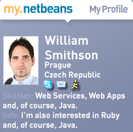

Create Your NetBeans Network on my.netbeans, FaceBook & MySpace!
What if the ability to stay current
about NetBeans and to keep in contact with other members of the
NetBeans community was possible through a single application?
At my.netbeans.org, our new
community
networking site, NetBeans users can find such an application—the
NetBeans social widget!
my.netbeans.org is one of the ways that
members of the NetBeans community around the world can stay connected
with each other; collaborate on projects; exchange training ideas;
follow the latest news and releases about NetBeans; and give feedback
to the NetBeans team.
Developers and users can create
personal profiles, browse the global NetBeans community, forge
relationships with existing members of my.netbeans and build valuable
networks. my.netbeans also includes a customizable widget that can be
embedded in websites and blogs. Placed on a web page, the social
widget is a great—not to mention cool-looking—tool that keeps
members in sync with the NetBeans community.
The widget displays basic profile
information from a member's my.netbeans account. Mousing over the
application reveals a drop-down menu of options: viewing a member's
network of fellow NetBeans users and developers; downloading the
latest release of the NetBeans IDE; getting snippets of news and
developments related to NetBeans, and previews of screencasts from
NetBeans.tv. The widget even offers the uninitiated a chance to make
their own my.netbeans widget and join the community!
But connecting with other members of
the NetBeans ecosystem isn't restricted to my.netbeans.org alone.
NetBeans fans can also be found on popular social networking sites
Facebook and MySpace.
NetBeans Community Docs
manager James
Branam recently created a network on Facebook specifically for
community docs contributors, and a second on MySpace. A general
NetBeans group, started by NetBeans Director of Engineering Jan
Chalupa, exists on Facebook as well.
For Branam, starting the NetBeans
community docs groups on the external sites was a spontaneous move.
“Although NetBeans has my.netbeans,
many people already use Facebook and MySpace, so why not start
networks there and also encourage members to consider my.netbeans as
well?”
According to Branam, an exciting
project has already come out of the Facebook group—a member
interested in creating a widget for the Community Docs program built
with the NetBeans IDE.
my.netbeans.org and other established
social networking sites translate into more ways for NetBeans
community members to communicate with each other, start exciting
projects, be in the know about NetBeans, and help to keep the
NetBeans community strong and active.
Get connected today!
(March
2008)
Additional Links
Join my.net.beans.org and create
your widget!
NetBeans on
Facebook
NetBeans
Community Docs on Facebook
NetBeans
Community Docs on MySpace
How
to Write a Tutorial for NetBeans